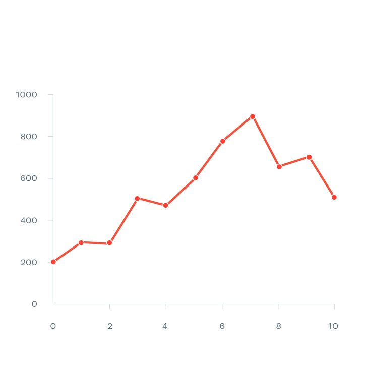

Ciri-ciri Diagram Garis
- 📅 Menyajikan data dalam bentuk titik-titik yang dihubungkan dengan garis
- 📊 Cocok untuk data berurutan seperti waktu
- 📈 Memperlihatkan tren kenaikan atau penurunan
- 🧮 Mudah melihat pola perubahan data
- 📌 Titik-titik mewakili nilai-nilai data pada waktu tertentu